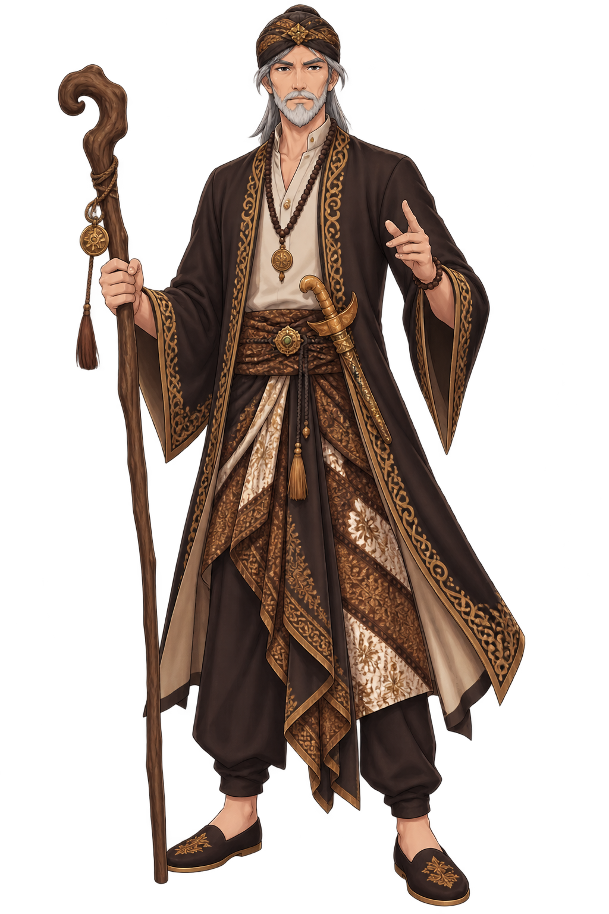

Ki Ajar
Winarong
Setelah meninggalkan Pajajaran,
perjalanan Kamandaka berlanjut menuju
tempat tinggal seorang pertapa yang
dikenal sebagai Ki Ajar Winarong.
Di tempat ini, Kamandaka tidak hanya
mencari petunjuk perjalanan. Ia juga
belajar bagaimana menggunakan bahasa
dengan tepat ketika berbicara kepada
orang yang lebih tua.
Salam
Pertama
Ki Ajar Winarong menyambut Kamandaka
di kediamannya.
Sebelum menyampaikan maksud
perjalanannya, Kamandaka harus
menunjukkan sikap hormat kepada
orang yang lebih tua.
Ki Ajar Winarong
"Sapa jenengmu, Le? Saka ngendi tekamu?"

Unggah-
Ungguh
Ki Ajar Winarong menjelaskan bahwa
pilihan kata dapat menunjukkan rasa
hormat kepada lawan bicara.
Saat berbicara kepada orang yang lebih
tua atau dihormati, gunakan bentuk
bahasa yang lebih sopan.
Basa Sopan
Asma
= nama
Kula
= saya
Nyuwun pangapunten
= mohon maaf
Matur nuwun
= terima kasih
Uji
Pemahaman
Ki Ajar Winarong memberikan satu pertanyaan sebelum Kamandaka melanjutkan perjalanan.
Pilih jawaban yang tepat
Manakah kalimat yang paling sopan ketika Kamandaka ingin bertanya kepada orang yang lebih tua?
Piwulang
Diperoleh
Kamandaka berhasil memahami cara
menggunakan bahasa yang lebih sopan
ketika berbicara kepada orang yang lebih
tua.
Ki Ajar Winarong kemudian memberikan
petunjuk untuk melanjutkan perjalanan.